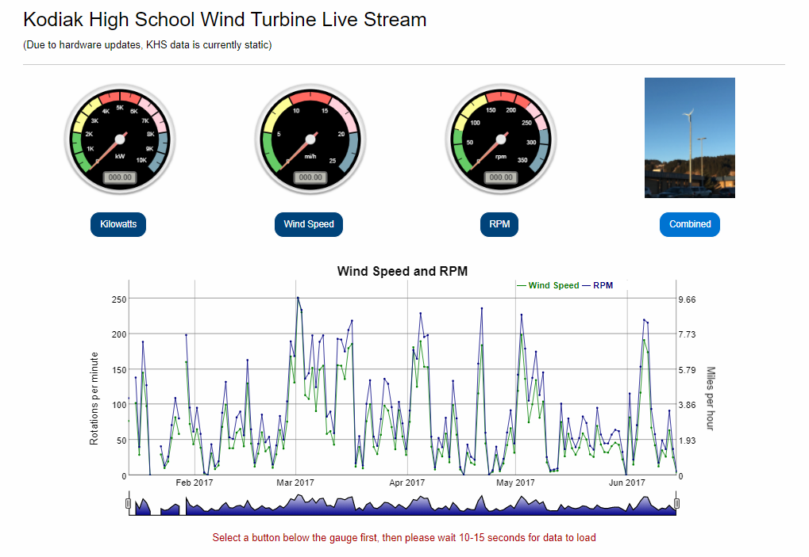
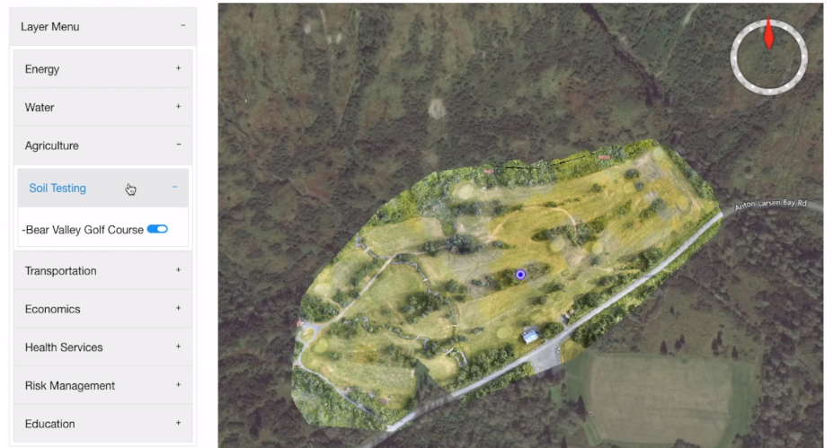
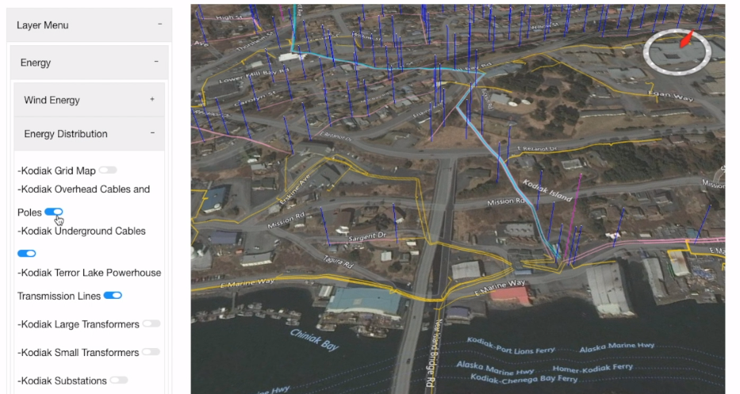

This project is developing a web app that visualizes the entire community infrastructure. Power, water, sewer, communication and roads are mapped including databased information per item. Significant Operations & Maintenance documentation was obtained from multiple environments, including Kodiak Electrical Association's 100% renewable energy systems, and the FTAA Sustainable Campus, to share and help other communities design and develop their own sustainable environments.
Focus is on smarter community themes, helping to design and build sharable models for:
Please visit the official CitySmart page on the "A World Bridge" website to get further details on the project. My page only has a brief introduction of the project taken from the official website. Click Here to visit the official "A World Bridge Website"
During my time as an intern with NASA, I worked on the NASA CitySmart project. I used JavaScript, Python, HTML, CSS, and Linux operating systems. I worked with another student at my location as well as students in Middletown, New York. Some of my major contributions to the project include:
Unfortunately, this application was not maintained after my partner and I left our internship so I have included photos and a video demonstration from a time when it was functioning. Figures 1,2, and 3 show a few items I worked on during the internship and Figure 4 is an application demonstration by myself and my partner.
Fig.1 Kodiak High School wind turbine data
Fig.2 Dynamically created layer menu and selected geospatial layer, Bear Valley Golf Course orthomosaic
Fig.3 Dynamically created layer menu and selected geospatial layers projected onto the WebWorldWind globe
Fig.4 Video Demonstration of the NASA CitySmart application